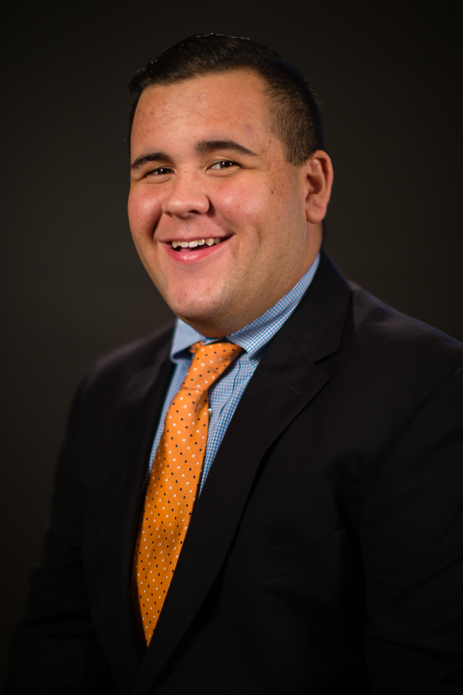

Reese Levin
Student Journalist

I am a Junior studying journalism at Maryland’s Merrill College. Before arriving at Maryland, I attended Anne Arundel Community College and obtained my Associate’s degree. My goal is to obtain a job working in sports. I’d love to either work for a team helping with media relations and social media or as a sports reporter/anchor for a local news station.
Experience:
Writer
Testudo Times
Jan. 2021 - Present
- General Assignment writer for SB Nation's Maryland site
-
Write quick pieces recapping Maryland Athletics news
Ramp Associate
Amazon @ BWI Airport
June 2020 – Feb. 2021
- Help unload and load flights at BWI Airport
-
Allowed to drive tug and belt-loader machinery on ramp
Director of Communications
The Pride: UMD's Official Student Fan Organization
May 2020 – Present
- Manage Facebook, Instagram and Twitter pages
-
Create graphic designs & promotional campaigns
Social Media Chair
Society of Professional Journalists: UMD's student chapter
Jan. 2020 – Present
- Manage Instagram and Twitter pages
-
Publicize SPJ events with graphic designs
Production Assistant
Big Ten Network
Jan. 2020 – Present
- Assist with the production of athletic events broadcasted by BTN Student U
-
Sports worked include Basketball, Lacrosse and Wrestling
Videographer
Maryland Athletics
July 2019 – Present
- Film game footage for both Soccer and Lacrosse teams
-
Filmed and distributed practice and game footage for the Football team during the 2019 and 2020 seasons
Production Assistant
Capital News Service
Feb. 2019 – Present
- Volunteer for Maryland Newsline, a student-run news program
-
Positions worked: Audio, VTR, camera operator, and floor director
Reporter/Producer
The Left Bench
Feb 2017 – Present
- Assist with the production of a biweekly studio show covering Maryland Athletics
-
Produce and edit video news packages
-
Help post different content on Facebook, Twitter and Instagram
Intern
Anne Arundel Community College Athletic Department
Aug. 2017 - May 2019
- Live-streamed home games through the athletic department’s YouTube page
-
Produced a monthly recap video about the teams in season
-
Technical Director for NJCAA Region 20 Soccer Championships - Oct. 2017
-
Play-by-play broadcaster for NJCAA Region 20 Softball Tournament - April 2018
-
Game clock operator for NJCAA Women’s Lacrosse National Tournament- May 2019
Education:
- Bachelor of Arts, Journalism, Minor in Leadership studies, University of Maryland: College Park, Expected graduation, May 2022
-
Associate of Arts, Transfer Studies, Anne Arundel County Community College, May 2019
Skills:
- Video Editing. Proficient skills with Adobe Premiere Pro, intermediate skills with Adobe After Effects. Able to tell visually appealing stories with accuracy
-
Journalism. Proficient skills in writing, reporting, editing, producing, intermediate skills with AP style, rule of thirds and lighting.
-
Social media. Proficient skills in managing multiple Facebook, Twitter and Instagram pages. Proficient in utilizing tools like TweetDeck, linkinbio, linktree and other SMM tools.